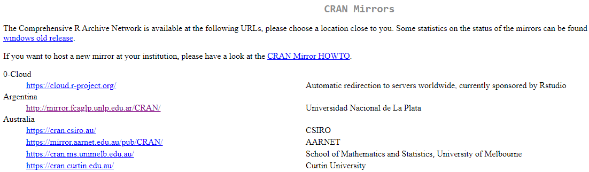
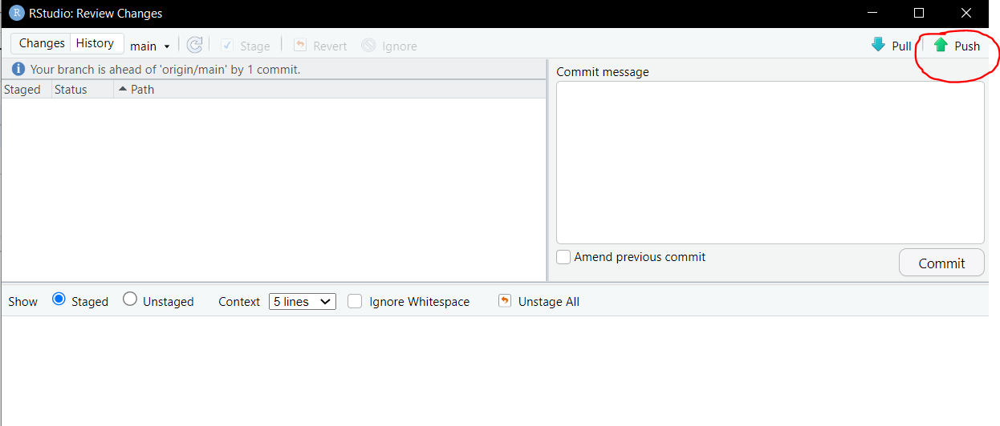
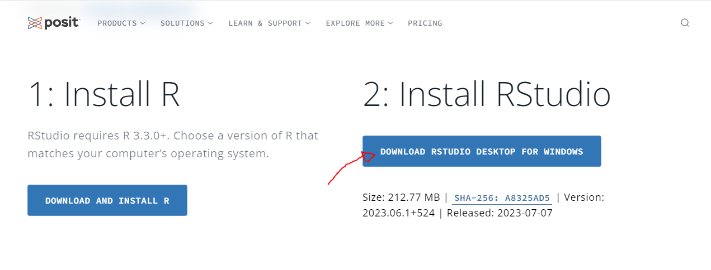
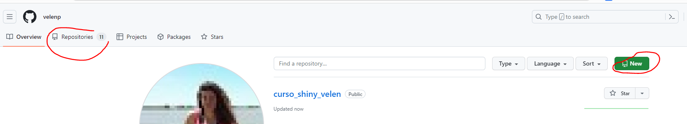
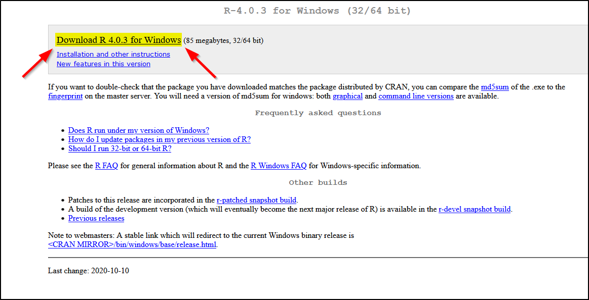
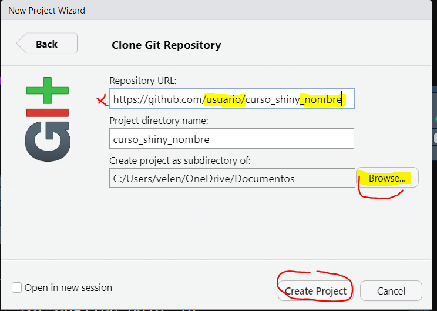
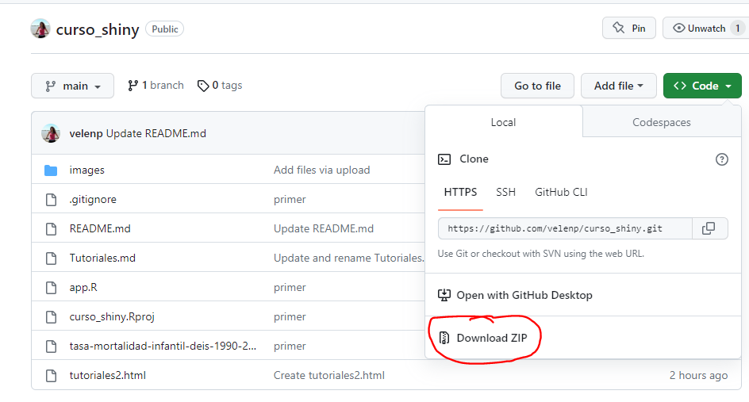
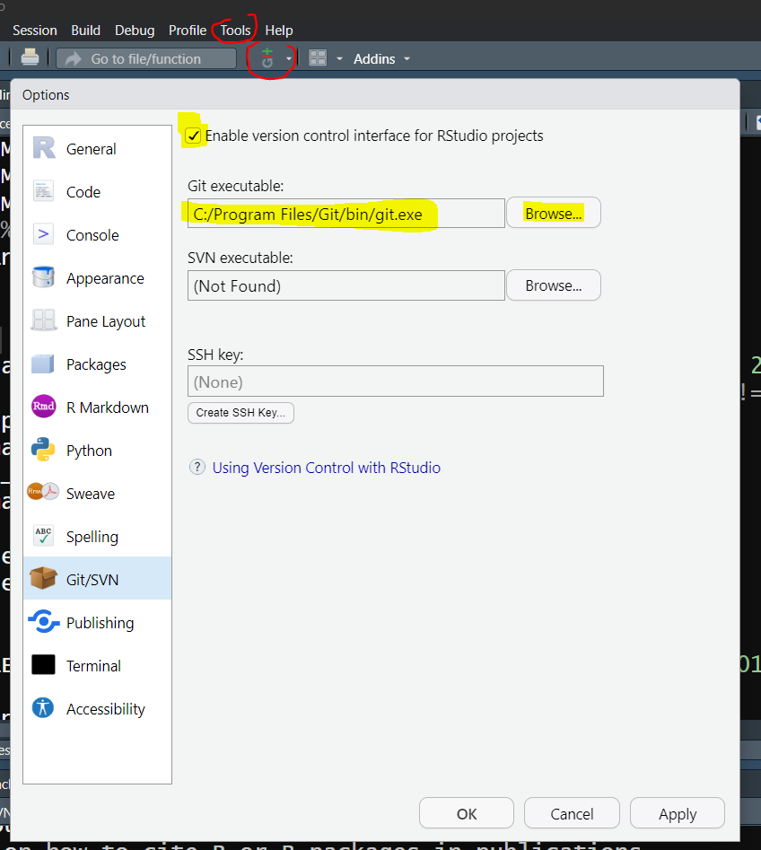
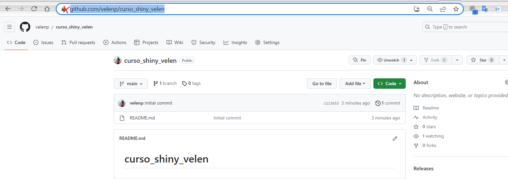
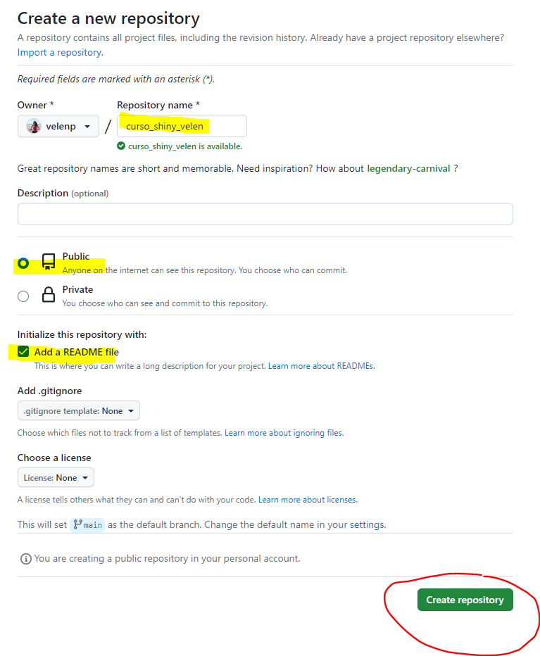

Introducción al procesamiento, análisis y visualización interactiva de datos abiertos en salud - UNTREF
─
Instalación de R: Permite comprender el lenguaje de programación R
Instalación de RStudio: Se instala un entorno de desarrollo integrado (IDE) que facilita el uso de R. Es el IDE más usado para el lenguaje R.
Para instalar R ingresa aca y sigue las instrucciones:


Una vez instalado R, pueden instalar RStudio:
RStudio es un entorno integrado de desarrollo (IDE por sus siglas en inglés). Si bien, podemos utilizar R directamente desde documentos de texto plano, se recomienda instalar y usar un IDE, ya que es una manera más práctica para trabajar y desarrollar nuestros proyectos. Esto se debe a que nos facilitará tareas como administrar los archivos con los que trabajamos, emplear herramientas para escribir y revisar nuestro código, efectuar capacidades gráficas, así como fluidez para trabajar en el entorno local de nuestro ordenador.
Ingresa al sitio oficial de RStudio.

R en combinación con el sistema de control de versiones distribuidas Git ofrece una configuración conveniente para hacer que su proyecto de investigación sea reproducible. Git le permite rastrear y compartir su código y análisis de manera eficiente.
Algunas razones para utilizar GIT y GitHub son:
GitHub es un servicio web fácil de usar que le permite almacenar el repositorio de su proyecto de forma remota. Otras alternativas son GitLab y Bitbucket.
RStudio integra soporte para Git, por lo que utilizaremos la combinación ampliamente utilizada R + Git + RStudio para el control de versiones y desarrollo colaborativo de proyectos.
Desde el siguiente enlace: https://git-scm.com/downloads
Crear su cuenta desde el siguiente enlace https://github.com/
Indique a RStudio dónde encontrar la instalación de Git. Para ello sigue los siguientes pasos:

En la consola de RStudio escribir
library(usethis)
edit_git_config()
Luego verán que se crea una ventana llamada “.gitconfig” y alli deberán completar los campos name y email tal como se ve en la figura y guardar.




https://github.com/velenp/curso_shiny
Haga clic en el boton verde que dice “code” y se desplegará una ventana, donde puede copiar el enlace del repositorio, o también puede descargar el .ZIP. En este caso vamos a descargar el .ZIP. Si usted desea conectarse para trabajar colaborativamente con ese repositorio puede copiar el enlace y clonarlo desde RStudio. Hay que tener en cuenta que para que esto sea posible el repositorio debe estar compartido con su usuario, de lo contrario no podrá trabajar colaborativamente.
En este caso, lo que vamos a hacer es clonar el repositorio vacio que ustedes crearon y a ese repositorio del que ustedes son propietarios subirles los materiales que se descargaron desde aqui en un .ZIP.


Seleccione la opción GIT

Ingrese la URL del repositorio que tiene su nombre, que crearon en el paso 5, seleccione la carpeta donde lo quiere alojar y ponga crear proyecto.


